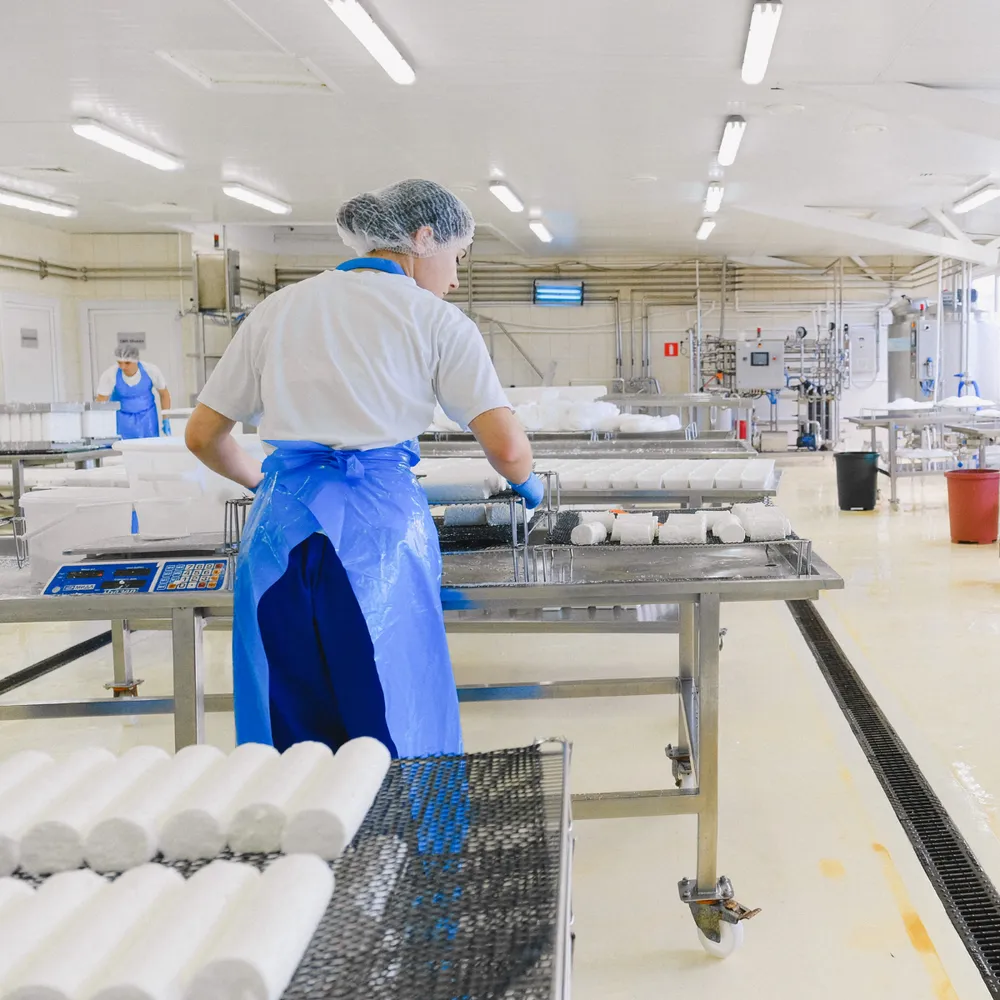

Area guide · Leicester
Leicester feeds the nation more than it lets on: crisps, ready meals, bakery, dairy and everything cold-chain, produced at industrial scale across the city and county. Around the food plants sit the golden-triangle logistics sheds and the remains of a textile trade that still cuts and sews. Most of the city's workwear is specified by an auditor.

The local economy
Food manufacture is the giant: some of Europe's largest snack and ready-meal operations, bakeries, dairies and meat processors run across Leicester and the county, nearly all certificated to retailer standards (BRCGS and customer codes) that dictate clothing down to the pocket. The logistics belt — Leicester sits at the top of the golden triangle, with major parks at every M1/M69 junction — moves what the plants make. And the textile and garment trade, smaller than its heyday but real, still cuts, sews and finishes across the inner city's workshops.
Kit by industry
| Local industry | The kit that matters | The spec detail |
|---|---|---|
| Food manufacture | Hygiene whites, snoods, wellingtons | The audit wardrobe — pocket and stud rules included |
| High-care / high-risk zones | Colour-coded garments per zone | Zone colours stop cross-contamination at a glance |
| Cold chain & chilled sheds | EN 342 layers, lined gloves | Cold ratings decoded |
| Logistics parks | Hi-vis, S1P trainers | Kit by zone |
| Textile workshops | Comfortable rotation kit, scissors-safe aprons | Fit and laundering beat any exotic spec here |
The detail that matters
Walk a certificated food plant and the workforce is a map: one garment colour for low-risk, another for high-care, sometimes a third for hygiene teams — so a person in the wrong zone is visible across the floor before they touch anything. The garments themselves follow the same logic as the layout: no external pockets above the waist, press-studs not buttons, no exposed personal clothing, laundering managed (in high-care, usually by the company or its laundry, never at home). Our food processing guide walks the whole rule set.
Buying implication: food-plant kit is a rotation purchase in multiple colourways — the same tunic bought three ways, sized per person, replaced on condition. It rewards a supplier who holds the matrix straight, which is precisely the job a trade account exists to do.
Supply
Questions
Colour-coding makes hygiene zones visible: low-risk, high-care and hygiene/cleaning teams each wear a distinct colour so anyone in the wrong area stands out immediately. It's a standard control under retailer certification schemes, and it turns the clothing order into a per-zone matrix.
Typically: company-provided garments with no external pockets above the waist, press-stud closures, hair and beard coverage, no exposed personal clothing or jewellery, dedicated footwear, and managed laundering — home washing is usually barred in high-care. The site's own hygiene policy is the final word; the pattern is consistent industry-wide.
Yes — the golden-triangle list (hi-vis, S1P trainers, layered kit for ambient-to-chilled work) ships from the same stock as the food-plant programmes, nationwide next-day on one trade account.
We supply nationwide from stock — send the roles and headcount and we'll come back with a kit list, embroidered.